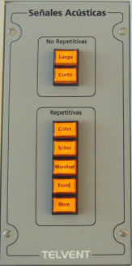

Señales Acústicas
El módulo de Señales Acústica permite al operador activar las señales acústicas del buque controlado en el puente, según el Reglamento para Prevención de Abordajes en la Mar, COLREG 72.
Para ello, este módulo contiene los siguientes elementos:

Al presionar los pulsadores del grupo de señales no repetitivas, es decir los pulsadores Largo y Corto, se emite un único sonido largo o corto.
Al presionar cualquiera los pulsadores del grupo de Señales Repetitivas, el pulsador se ilumina y se emite la combinación de señales acústicas prevista para la condición establecida, según el reglamento COLREG 75, y se repetirá con la frecuencia prevista en dicho reglamento hasta que se presione de nuevo el pulsador y éste apague, eliminando así la condición establecida.
Si estando establecida una condición, se pulsa otra distinta de entre las Señales Repetitivas, automáticamente se elimina la condición anterior, apagándose el pulsador correspondiente, y se establece la nueva.
Al aplicar la Regla 35 de la COLREG 72 para determinar las señales acústicas emitidas, se tiene en cuenta de forma automática si la eslora del buque controlado es mayor o menor de100 metros.
Todos estos sonidos se escuchan desde el conjunto de altavoces del Sistema Sonoro del puente que lo emite. También es escuchado en los otros puentes siempre que la distancia entre las unidades controladas en ambos lo permita, y teniendo en cuenta las posiciones relativas para la orientación del sonido.